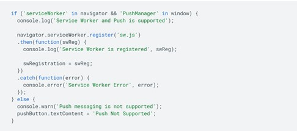
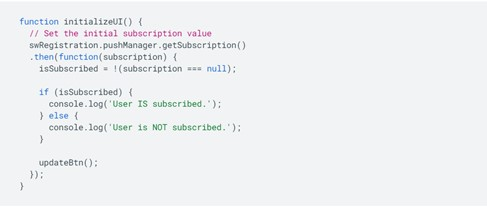

An aspect of web development that I have looked into is push notifications through the web. When most people think of push notifications the first thing that probably comes to mind is push notifications on your phone. The way they are being used here though is a push notification simply executed on the web allowing companies and sites to keep users engaged and coming back. Whether that be with an exciting deal or an update on what the company is doing or you would also be able to recieve notifications alerting you of a purchase made with your credit card. Basically the way you think of push notifications working on your phone would be how these could be implemented.
Below is some examples of some code on how to begin implementing this into a website. All the code is not shown, but the link is attached at the bottom that shows the full process on how to implement it. All you need to do is use javascript to implement it in your website, we have not covered javascript this year so the information is still foreign to me at the moment. This does seem like a cool addition to a website and after I gain some experience using javascript I can definitely see myself coming back to this to see how to implement it.
This is how to add the service worker to the page.

This is shows how to change the initialize state.
